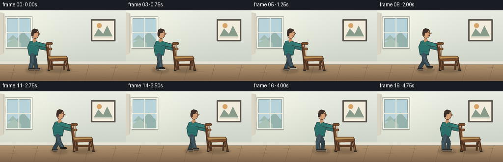
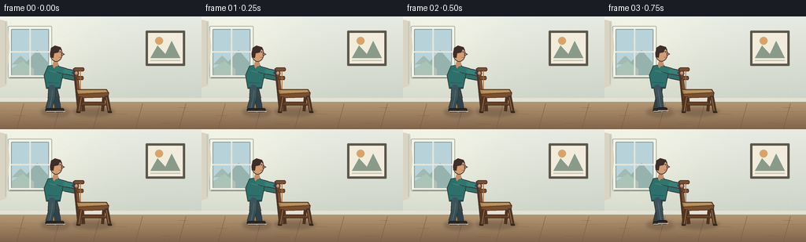

CODING AGENTS AS PIXEL WORLD MODELS
traex/GPT-5.6-Sol · motion_rationality_0057
点击播放 · 原生 RGB 像素
逐轮保存的候选
回放视频、检查图与代码变化。
每份候选均可单独播放。实际图片检查记录在下方工具轨迹中。
候选 01播放与检查图
点击播放 · 原生 RGB 像素

展开代码变化
--- 上一保存版本
+++ 本次保存版本
@@ -0,0 +1,283 @@
+from pathlib import Path
+import math
+import numpy as np
+from PIL import Image, ImageDraw, ImageFilter
+import artifact_io
+
+# Hand-illustrated, deterministic side-view animation of a person carefully
+# pushing a dining chair across a room. Everything is rendered from geometry.
+W, H, N = 256, 144, 20
+S = 4
+rng = np.random.default_rng(57)
+
+
+def sc(v):
+ return int(round(v * S))
+
+
+def pts(seq):
+ return [(sc(x), sc(y)) for x, y in seq]
+
+
+def ellipse(draw, box, fill, outline=None, width=1):
+ draw.ellipse(tuple(sc(v) for v in box), fill=fill, outline=outline, width=sc(width) if outline else 1)
+
+
+def line(draw, xy, fill, width=1, joint="curve"):
+ draw.line(pts(xy), fill=fill, width=sc(width), joint=joint)
+
+
+def polygon(draw, xy, fill, outline=None):
+ draw.polygon(pts(xy), fill=fill)
+ if outline:
+ draw.line(pts(list(xy) + [xy[0]]), fill=outline, width=sc(1), joint="curve")
+
+
+def rounded(draw, box, radius, fill, outline=None, width=1):
+ draw.rounded_rectangle(tuple(sc(v) for v in box), radius=sc(radius), fill=fill,
+ outline=outline, width=sc(width) if outline else 1)
+
+
+def smoothstep(x):
+ x = max(0.0, min(1.0, x))
+ return x*x*(3-2*x)
+
+
+def base_room():
+ # Soft daylight gradient on a calm apartment wall.
+ yy, xx = np.mgrid[0:H*S, 0:W*S]
+ wall = np.zeros((H*S, W*S, 3), dtype=np.float32)
+ top = np.array([232, 235, 226], float)
+ bottom = np.array([205, 211, 200], float)
+ t = np.clip(yy/(112*S), 0, 1)[..., None]
+ wall[:] = top*(1-t) + bottom*t
+ # daylight is warmer and brighter close to the left window
+ glow = np.exp(-(((xx-34*S)/(95*S))**2 + ((yy-48*S)/(80*S))**2))[...,None]
+ wall += glow*np.array([14, 13, 8])[None,None,:]
+ noise = rng.normal(0, .55, wall.shape[:2])[...,None]
+ wall += noise
+ wall = np.uint8(np.clip(wall, 0, 255))
+ im = Image.fromarray(wall, "RGB")
+ d = ImageDraw.Draw(im)
+
+ # window recess and view
+ rounded(d, (10, 12, 66, 79), 1.5, (244,244,233), (170,178,169), 1)
+ rounded(d, (14, 16, 62, 75), 1, (184,211,218), (137,154,151), 1)
+ # distant outside shapes behind the glass
+ polygon(d, [(15,61),(26,50),(38,61)], (161,187,178))
+ polygon(d, [(29,63),(47,43),(62,60),(62,75),(29,75)], (151,179,173))
+ polygon(d, [(15,66),(29,57),(43,67),(43,75),(15,75)], (172,196,183))
+ line(d, [(38,16),(38,75)], (228,231,218), 2)
+ line(d, [(14,45),(62,45)], (228,231,218), 2)
+ line(d, [(12,78),(65,78)], (151,153,145), 2)
+ # soft curtain at far left
+ polygon(d, [(0,4),(9,6),(12,38),(8,88),(0,91)], (217,212,195))
+ line(d, [(7,7),(7,86)], (195,192,178), 1)
+
+ # framed print
+ rounded(d, (185,18,235,63), 1, (92,86,77), None)
+ rounded(d, (188,21,232,60), .5, (242,236,220), None)
+ polygon(d, [(191,53),(200,37),(210,48),(218,31),(229,53)], (137,155,139))
+ ellipse(d, (197,26,207,36), (216,165,104))
+ line(d, [(191,56),(229,56)], (190,180,161), 1)
+
+ # baseboard and warm wooden floor
+ d.rectangle((0,sc(104),sc(W),sc(110)), fill=(229,226,212))
+ d.rectangle((0,sc(109),sc(W),sc(111)), fill=(159,151,134))
+ # floor perspective gradient
+ for y in range(sc(111), sc(H)):
+ u = (y/S-111)/(H-111)
+ col = tuple(int(a*(1-u)+b*u) for a,b in zip((179,149,111),(128,101,76)))
+ d.line([(0,y),(sc(W),y)], fill=col)
+ # floorboards and short grain strokes
+ for x in [-18,30,77,127,181,236,292]:
+ line(d, [(x,111),(x-9,144)], (112,90,69), .55)
+ for y in [120,133]:
+ line(d, [(0,y),(256,y+1.3)], (145,115,84), .55)
+ for x,y,l in [(18,126,15),(66,116,11),(93,137,18),(147,124,14),(205,136,17),(227,116,10)]:
+ line(d, [(x,y),(x+l,y+.4)], (118,93,70), .45)
+ return im
+
+
+BACKGROUND = base_room()
+
+
+def draw_shadow(im, cx, px, moving):
+ layer = Image.new("RGBA", im.size, (0,0,0,0))
+ d = ImageDraw.Draw(layer)
+ # Chair footprint and body footprint, directional daylight shadows.
+ d.ellipse((sc(cx-7),sc(116),sc(cx+46),sc(127)), fill=(43,35,29,65))
+ d.ellipse((sc(px-16),sc(116),sc(px+21),sc(128)), fill=(45,36,29,60))
+ if moving:
+ d.ellipse((sc(cx-15),sc(119),sc(cx+1),sc(123)), fill=(55,43,32,25))
+ layer = layer.filter(ImageFilter.GaussianBlur(sc(2.0)))
+ im.paste(layer, (0,0), layer)
+
+
+def limb(draw, a, b, color, width, outline=(53,57,54)):
+ line(draw, [a,b], outline, width+2)
+ line(draw, [a,b], color, width)
+ ellipse(draw, (a[0]-width/2, a[1]-width/2, a[0]+width/2, a[1]+width/2), color)
+ ellipse(draw, (b[0]-width/2, b[1]-width/2, b[0]+width/2, b[1]+width/2), color)
+
+
+def draw_person(im, px, cx, phase, active, settle):
+ d = ImageDraw.Draw(im)
+ bob = (-0.9*abs(math.sin(phase))) if active else 0
+ hip = (px, 91+bob)
+ shoulder = (px+2.5, 65+bob)
+
+ # Gait: the feet counter-swing, and each raised foot only lifts on its swing phase.
+ if active:
+ sw = math.sin(phase)
+ rel1, rel2 = 9.5*sw, -9.5*sw
+ lift1 = 3.8*max(0, math.sin(phase))
+ lift2 = 3.8*max(0, -math.sin(phase))
+ else:
+ rel1, rel2 = (-5.5, 6.5) if not settle else (-4.0, 5.0)
+ lift1 = lift2 = 0
+ foot1 = (px+rel1, 121-lift1)
+ foot2 = (px+rel2, 121-lift2)
+ knee1 = ((hip[0]+foot1[0])/2 - 3.0*math.sin(phase), 105+bob-lift1*.25)
+ knee2 = ((hip[0]+foot2[0])/2 + 3.0*math.sin(phase), 105+bob-lift2*.25)
+
+ # farther leg, muted blue denim
+ limb(d, hip, knee2, (54,74,82), 7)
+ limb(d, knee2, (foot2[0]-1,foot2[1]-3), (48,67,75), 6)
+ # rear shoe
+ rounded(d, (foot2[0]-5,foot2[1]-4,foot2[0]+7,foot2[1]+1), 2.2, (48,43,38), (34,31,29), 1)
+ line(d, [(foot2[0]-4,foot2[1]),(foot2[0]+8,foot2[1])], (206,199,181), 1)
+
+ # back arm already reaching around the chair back
+ back_hand = (cx-1.5, 79+bob*.15)
+ elbow_back = (px+14, 76+bob)
+ limb(d, (shoulder[0]-1, shoulder[1]+3), elbow_back, (42,102,99), 6)
+ limb(d, elbow_back, back_hand, (49,112,106), 5)
+ ellipse(d, (back_hand[0]-3.4,back_hand[1]-3.2,back_hand[0]+3.4,back_hand[1]+3.2), (205,151,113), (91,67,52), 1)
+
+ # torso: forward-leaning knit sweater with a curved hem
+ polygon(d, [(px-7,63+bob),(px+5,61+bob),(px+12,72+bob),
+ (px+8,92+bob),(px-9,92+bob),(px-12,75+bob)], (44,113,108), (42,66,64))
+ # subtle fabric highlights/folds
+ line(d, [(px-5,69+bob),(px+6,72+bob)], (72,137,130), 1)
+ line(d, [(px-8,84+bob),(px+6,85+bob)], (34,91,88), 1)
+ line(d, [(px-8,91+bob),(px+8,91+bob)], (34,73,75), 2)
+
+ # near leg in front
+ limb(d, (hip[0]-2,hip[1]), knee1, (61,84,94), 8)
+ limb(d, knee1, (foot1[0]-1,foot1[1]-3), (57,79,89), 7)
+ # jeans seams
+ line(d, [(hip[0]-1,hip[1]+3),knee1,(foot1[0],foot1[1]-3)], (91,109,113), .75)
+ rounded(d, (foot1[0]-5,foot1[1]-4,foot1[0]+8,foot1[1]+1), 2.3, (43,39,35), (29,27,25), 1)
+ line(d, [(foot1[0]-4,foot1[1]),(foot1[0]+9,foot1[1])], (214,206,187), 1)
+
+ # neck and side-profile head, tipped slightly toward the chair
+ ellipse(d, (px-1,56+bob,px+6,67+bob), (199,143,104))
+ headx, heady = px+3.7, 48+bob
+ ellipse(d, (headx-8.2,heady-10,headx+7.6,heady+9.8), (211,158,118), (79,58,47), 1)
+ # ear and small nose profile facing right
+ ellipse(d, (headx-7.5,heady-1,headx-3.5,heady+3), (194,137,101), (105,75,58), 1)
+ polygon(d, [(headx+6.5,heady-2),(headx+10,heady+.2),(headx+6.5,heady+2)], (207,151,113), (91,66,51))
+ # dark hair cap and nape
+ polygon(d, [(headx-8,heady-1),(headx-7,heady-8),(headx-2,heady-11),
+ (headx+5,heady-9),(headx+7,heady-5),(headx+4,heady-6),
+ (headx+2,heady-2),(headx-3,heady-1),(headx-4,heady+5),(headx-8,heady+4)],
+ (62,47,40))
+ # eye and brow
+ line(d, [(headx+2.7,heady-3),(headx+5.4,heady-3.2)], (74,53,43), .8)
+ ellipse(d, (headx+4.2,heady-2.8,headx+5.1,heady-1.9), (38,35,31))
+ line(d, [(headx+3,heady+4),(headx+6,heady+4.2)], (138,78,65), .65)
+
+ # near arm: shoulder to the top of the chair back; exact attached hand target.
+ hand = (cx-2.4, 72.5+bob*.15)
+ elbow = (px+15.5, 70+bob)
+ limb(d, (shoulder[0]+2, shoulder[1]+2), elbow, (48,119,113), 7)
+ limb(d, elbow, hand, (56,129,121), 6)
+ # sleeve cuff and hand wrapped around the rail
+ line(d, [(hand[0]-5,hand[1]-1),(hand[0]-1,hand[1])], (30,82,81), 3)
+ ellipse(d, (hand[0]-3.8,hand[1]-3.4,hand[0]+3.6,hand[1]+3.3), (215,160,119), (91,67,52), 1)
+ line(d, [(hand[0],hand[1]+1.2),(hand[0]+3.4,hand[1]+1.7)], (143,91,68), .65)
+
+
+def draw_chair(im, cx, tilt=0):
+ d = ImageDraw.Draw(im)
+ wood_dark = (76,52,36)
+ wood = (124,79,46)
+ wood_hi = (164,111,66)
+ # chair back is very slightly angled rearward; all pieces translate rigidly.
+ bx_top = cx-3.5 + tilt
+ bx_seat = cx
+
+ # far-side legs first
+ line(d, [(cx+5,98),(cx+7,121)], wood_dark, 4)
+ line(d, [(cx+33,99),(cx+31,121)], wood_dark, 4)
+ line(d, [(cx+6,110),(cx+31,110)], (95,61,39), 3)
+ # rear back post extending continuously to floor
+ line(d, [(bx_top,66),(cx+2,121)], wood_dark, 6)
+ line(d, [(bx_top+1,66),(cx+3,120)], wood, 3)
+ # top and middle back rails (side silhouette reads as dining chair)
+ rounded(d, (bx_top-2,65,cx+8,70), 2, wood, wood_dark, 1)
+ rounded(d, (cx-2,76,cx+7,81), 1.5, wood, wood_dark, 1)
+ line(d, [(cx+3,69),(cx+3,95)], wood_hi, 1)
+
+ # seat cushion and wooden apron
+ polygon(d, [(cx-2,93),(cx+36,93),(cx+39,98),(cx,100)], (173,132,79), wood_dark)
+ polygon(d, [(cx,99),(cx+39,97),(cx+38,103),(cx+1,104)], wood, wood_dark)
+ line(d, [(cx+2,96),(cx+35,95)], (216,177,115), 1)
+ # near legs, naturally splayed and grounded
+ line(d, [(cx+3,102),(cx,122)], wood_dark, 5)
+ line(d, [(cx+4,103),(cx+1,121)], wood_hi, 1)
+ line(d, [(cx+36,101),(cx+40,122)], wood_dark, 5)
+ line(d, [(cx+36,103),(cx+39,120)], wood_hi, 1)
+ # near stretcher
+ line(d, [(cx+4,112),(cx+37,112)], wood_dark, 3)
+ line(d, [(cx+5,111.5),(cx+36,111.5)], wood, 1)
+ # tiny contact pads anchor the chair to the floor
+ line(d, [(cx-2,122),(cx+3,122)], (44,39,34), 2)
+ line(d, [(cx+38,122),(cx+43,122)], (44,39,34), 2)
+
+
+def render_frame(i):
+ im = BACKGROUND.copy()
+ # Two quiet establishing frames, a smooth push, then a brief settled hold.
+ raw = (i-2)/14.0
+ prog = smoothstep(raw)
+ travel = 72.0*prog
+ cx = 99.0 + travel
+ px = cx - 31.0
+ active = (i >= 3 and i <= 15)
+ settle = i >= 16
+ # Gait phase follows distance, so stride speed is tied to actual translation.
+ phase = travel/22.0 * 2*math.pi
+
+ draw_shadow(im, cx, px, active)
+ # Person is behind the furniture; hands are still visible around the back rail.
+ draw_person(im, px, cx, phase, active, settle)
+ # microscopic compliant tilt during acceleration/deceleration, never enough to lift feet
+ velocity = 72*(6*max(0,min(1,raw))*(1-max(0,min(1,raw))))/14 if 0 < raw < 1 else 0
+ tilt = -0.4*min(1, velocity/6)
+ draw_chair(im, cx, tilt)
+
+ # Repaint fingertips over the chair rail for a legible grip.
+ d = ImageDraw.Draw(im)
+ bob = (-0.9*abs(math.sin(phase))) if active else 0
+ ellipse(d, (cx-4.7,69.3+bob*.15,cx+.6,75.3+bob*.15), (214,159,118), (91,67,52), 1)
+ line(d, [(cx-3.1,73+bob*.15),(cx+.2,73.5+bob*.15)], (142,91,68), .65)
+
+ # Fine foreground grain for integration, then antialias downsample.
+ im = im.resize((W,H), Image.Resampling.LANCZOS)
+ arr = np.array(im, dtype=np.int16)
+ # subtle cinematic grain, deterministic per frame and low enough not to flicker visibly
+ local = np.random.default_rng(5700+i).normal(0, .32, arr.shape[:2])[...,None]
+ arr = np.clip(arr + local, 0, 255).astype(np.uint8)
+ return arr
+
+
+def main():
+ frames = np.stack([render_frame(i) for i in range(N)], axis=0)
+ artifact_io.save(frames, Path(__file__).resolve().parent)
+ print("saved", frames.shape, frames.dtype)
+
+
+if __name__ == "__main__":
+ main()
可观测工具轨迹
实际执行的命令与返回图片。
命令 1exit 0
/bin/bash -lc "ls -la && printf '\\n--- prompt.txt ---\\n' && cat prompt.txt && printf '\\n--- GENERATION_RULES.md ---\\n' && cat GENERATION_RULES.md && printf '\\n--- task_spec.json ---\\n' && cat task_spec.json"
命令 2exit 0
/bin/bash -lc "sed -n '1,240p' artifact_io.py"
命令 3exit 0
/bin/bash -lc "cat > generate.py <<'PY'
from pathlib import Path
import math
import numpy as np
from PIL import Image, ImageDraw, ImageFilter
import artifact_io
# Hand-illustrated, deterministic side-view animation of a person carefully
# pushing a dining chair across a room. Everything is rendered from geometry.
W, H, N = 256, 144, 20
S = 4
rng = np.random.default_rng(57)
def sc(v):
return int(round(v * S))
def pts(seq):
return [(sc(x), sc(y)) for x, y in seq]
def ellipse(draw, box, fill, outline=None, width=1):
draw.ellipse(tuple(sc(v) for v in box), fill=fill, outline=outline, width=sc(width) if outline else 1)
def line(draw, xy, fill, width=1, joint=\"curve\"):
draw.line(pts(xy), fill=fill, width=sc(width), joint=joint)
def polygon(draw, xy, fill, outline=None):
draw.polygon(pts(xy), fill=fill)
if outline:
draw.line(pts(list(xy) + [xy[0]]), fill=outline, width=sc(1), joint=\"curve\")
def rounded(draw, box, radius, fill, outline=None, width=1):
draw.rounded_rectangle(tuple(sc(v) for v in box), radius=sc(radius), fill=fill,
outline=outline, width=sc(width) if outline else 1)
def smoothstep(x):
x = max(0.0, min(1.0, x))
return x*x*(3-2*x)
def base_room():
# Soft daylight gradient on a calm apartment wall.
yy, xx = np.mgrid[0:H*S, 0:W*S]
wall = np.zeros((H*S, W*S, 3), dtype=np.float32)
top = np.array([232, 235, 226], float)
bottom = np.array([205, 211, 200], float)
t = np.clip(yy/(112*S), 0, 1)[..., None]
wall[:] = top*(1-t) + bottom*t
# daylight is warmer and brighter close to the left window
glow = np.exp(-(((xx-34*S)/(95*S))**2 + ((yy-48*S)/(80*S))**2))[...,None]
wall += glow*np.array([14, 13, 8])[None,None,:]
noise = rng.normal(0, .55, wall.shape[:2])[...,None]
wall += noise
wall = np.uint8(np.clip(wall, 0, 255))
im = Image.fromarray(wall, \"RGB\")
d = ImageDraw.Draw(im)
# window recess and view
rounded(d, (10, 12, 66, 79), 1.5, (244,244,233), (170,178,169), 1)
rounded(d, (14, 16, 62, 75), 1, (184,211,218), (137,154,151), 1)
# distant outside shapes behind the glass
polygon(d, [(15,61),(26,50),(38,61)], (161,187,178))
polygon(d, [(29,63),(47,43),(62,60),(62,75),(29,75)], (151,179,173))
polygon(d, [(15,66),(29,57),(43,67),(43,75),(15,75)], (172,196,183))
line(d, [(38,16),(38,75)], (228,231,218), 2)
line(d, [(14,45),(62,45)], (228,231,218), 2)
line(d, [(12,78),(65,78)], (151,153,145), 2)
# soft curtain at far left
polygon(d, [(0,4),(9,6),(12,38),(8,88),(0,91)], (217,212,195))
line(d, [(7,7),(7,86)], (195,192,178), 1)
# framed print
rounded(d, (185,18,235,63), 1, (92,86,77), None)
rounded(d, (188,21,232,60), .5, (242,236,220), None)
polygon(d, [(191,53),(200,37),(210,48),(218,31),(229,53)], (137,155,139))
ellipse(d, (197,26,207,36), (216,165,104))
line(d, [(191,56),(229,56)], (190,180,161), 1)
# baseboard and warm wooden floor
d.rectangle((0,sc(104),sc(W),sc(110)), fill=(229,226,212))
d.rectangle((0,sc(109),sc(W),sc(111)), fill=(159,151,134))
# floor perspective gradient
for y in range(sc(111), sc(H)):
u = (y/S-111)/(H-111)
col = tuple(int(a*(1-u)+b*u) for a,b in zip((179,149,111),(128,101,76)))
d.line([(0,y),(sc(W),y)], fill=col)
# floorboards and short grain strokes
for x in [-18,30,77,127,181,236,292]:
line(d, [(x,111),(x-9,144)], (112,90,69), .55)
for y in [120,133]:
line(d, [(0,y),(256,y+1.3)], (145,115,84), .55)
for x,y,l in [(18,126,15),(66,116,11),(93,137,18),(147,124,14),(205,136,17),(227,116,10)]:
line(d, [(x,y),(x+l,y+.4)], (118,93,70), .45)
return im
BACKGROUND = base_room()
def draw_shadow(im, cx, px, moving):
layer = Image.new(\"RGBA\", im.size, (0,0,0,0))
d = ImageDraw.Draw(layer)
# Chair footprint and body footprint, directional daylight shadows.
d.ellipse((sc(cx-7),sc(116),sc(cx+46),sc(127)), fill=(43,35,29,65))
d.ellipse((sc(px-16),sc(116),sc(px+21),sc(128)), fill=(45,36,29,60))
if moving:
d.ellipse((sc(cx-15),sc(119),sc(cx+1),sc(123)), fill=(55,43,32,25))
layer = layer.filter(ImageFilter.GaussianBlur(sc(2.0)))
im.paste(layer, (0,0), layer)
def limb(draw, a, b, color, width, outline=(53,57,54)):
line(draw, [a,b], outline, width+2)
line(draw, [a,b], color, width)
ellipse(draw, (a[0]-width/2, a[1]-width/2, a[0]+width/2, a[1]+width/2), color)
ellipse(draw, (b[0]-width/2, b[1]-width/2, b[0]+width/2, b[1]+width/2), color)
def draw_person(im, px, cx, phase, active, settle):
d = ImageDraw.Draw(im)
bob = (-0.9*abs(math.sin(phase))) if active else 0
hip = (px, 91+bob)
shoulder = (px+2.5, 65+bob)
# Gait: the feet counter-swing, and each raised foot only lifts on its swing phase.
if active:
sw = math.sin(phase)
rel1, rel2 = 9.5*sw, -9.5*sw
lift1 = 3.8*max(0, math.sin(phase))
lift2 = 3.8*max(0, -math.sin(phase))
else:
rel1, rel2 = (-5.5, 6.5) if not settle else (-4.0, 5.0)
lift1 = lift2 = 0
foot1 = (px+rel1, 121-lift1)
foot2 = (px+rel2, 121-lift2)
knee1 = ((hip[0]+foot1[0])/2 - 3.0*math.sin(phase), 105+bob-lift1*.25)
knee2 = ((hip[0]+foot2[0])/2 + 3.0*math.sin(phase), 105+bob-lift2*.25)
# farther leg, muted blue denim
limb(d, hip, knee2, (54,74,82), 7)
limb(d, knee2, (foot2[0]-1,foot2[1]-3), (48,67,75), 6)
# rear shoe
rounded(d, (foot2[0]-5,foot2[1]-4,foot2[0]+7,foot2[1]+1), 2.2, (48,43,38), (34,31,29), 1)
line(d, [(foot2[0]-4,foot2[1]),(foot2[0]+8,foot2[1])], (206,199,181), 1)
# back arm already reaching around the chair back
back_hand = (cx-1.5, 79+bob*.15)
elbow_back = (px+14, 76+bob)
limb(d, (shoulder[0]-1, shoulder[1]+3), elbow_back, (42,102,99), 6)
limb(d, elbow_back, back_hand, (49,112,106), 5)
ellipse(d, (back_hand[0]-3.4,back_hand[1]-3.2,back_hand[0]+3.4,back_hand[1]+3.2), (205,151,113), (91,67,52), 1)
# torso: forward-leaning knit sweater with a curved hem
polygon(d, [(px-7,63+bob),(px+5,61+bob),(px+12,72+bob),
(px+8,92+bob),(px-9,92+bob),(px-12,75+bob)], (44,113,108), (42,66,64))
# subtle fabric highlights/folds
line(d, [(px-5,69+bob),(px+6,72+bob)], (72,137,130), 1)
line(d, [(px-8,84+bob),(px+6,85+bob)], (34,91,88), 1)
line(d, [(px-8,91+bob),(px+8,91+bob)], (34,73,75), 2)
# near leg in front
limb(d, (hip[0]-2,hip[1]), knee1, (61,84,94), 8)
limb(d, knee1, (foot1[0]-1,foot1[1]-3), (57,79,89), 7)
# jeans seams
line(d, [(hip[0]-1,hip[1]+3),knee1,(foot1[0],foot1[1]-3)], (91,109,113), .75)
rounded(d, (foot1[0]-5,foot1[1]-4,foot1[0]+8,foot1[1]+1), 2.3, (43,39,35), (29,27,25), 1)
line(d, [(foot1[0]-4,foot1[1]),(foot1[0]+9,foot1[1])], (214,206,187), 1)
# neck and side-profile head, tipped slightly toward the chair
ellipse(d, (px-1,56+bob,px+6,67+bob), (199,143,104))
headx, heady = px+3.7, 48+bob
ellipse(d, (headx-8.2,heady-10,headx+7.6,heady+9.8), (211,158,118), (79,58,47), 1)
# ear and small nose profile facing right
ellipse(d, (headx-7.5,heady-1,headx-3.5,heady+3), (194,137,101), (105,75,58), 1)
polygon(d, [(headx+6.5,heady-2),(headx+10,heady+.2),(headx+6.5,heady+2)], (207,151,113), (91,66,51))
# dark hair cap and nape
polygon(d, [(headx-8,heady-1),(headx-7,heady-8),(headx-2,heady-11),
(headx+5,heady-9),(headx+7,heady-5),(headx+4,heady-6),
(headx+2,heady-2),(headx-3,heady-1),(headx-4,heady+5),(headx-8,heady+4)],
(62,47,40))
# eye and brow
line(d, [(headx+2.7,heady-3),(headx+5.4,heady-3.2)], (74,53,43), .8)
ellipse(d, (headx+4.2,heady-2.8,headx+5.1,heady-1.9), (38,35,31))
line(d, [(headx+3,heady+4),(headx+6,heady+4.2)], (138,78,65), .65)
# near arm: shoulder to the top of the chair back; exact attached hand target.
hand = (cx-2.4, 72.5+bob*.15)
elbow = (px+15.5, 70+bob)
limb(d, (shoulder[0]+2, shoulder[1]+2), elbow, (48,119,113), 7)
limb(d, elbow, hand, (56,129,121), 6)
# sleeve cuff and hand wrapped around the rail
line(d, [(hand[0]-5,hand[1]-1),(hand[0]-1,hand[1])], (30,82,81), 3)
ellipse(d, (hand[0]-3.8,hand[1]-3.4,hand[0]+3.6,hand[1]+3.3), (215,160,119), (91,67,52), 1)
line(d, [(hand[0],hand[1]+1.2),(hand[0]+3.4,hand[1]+1.7)], (143,91,68), .65)
def draw_chair(im, cx, tilt=0):
d = ImageDraw.Draw(im)
wood_dark = (76,52,36)
wood = (124,79,46)
wood_hi = (164,111,66)
# chair back is very slightly angled rearward; all pieces translate rigidly.
bx_top = cx-3.5 + tilt
bx_seat = cx
# far-side legs first
line(d, [(cx+5,98),(cx+7,121)], wood_dark, 4)
line(d, [(cx+33,99),(cx+31,121)], wood_dark, 4)
line(d, [(cx+6,110),(cx+31,110)], (95,61,39), 3)
# rear back post extending continuously to floor
line(d, [(bx_top,66),(cx+2,121)], wood_dark, 6)
line(d, [(bx_top+1,66),(cx+3,120)], wood, 3)
# top and middle back rails (side silhouette reads as dining chair)
rounded(d, (bx_top-2,65,cx+8,70), 2, wood, wood_dark, 1)
rounded(d, (cx-2,76,cx+7,81), 1.5, wood, wood_dark, 1)
line(d, [(cx+3,69),(cx+3,95)], wood_hi, 1)
# seat cushion and wooden apron
polygon(d, [(cx-2,93),(cx+36,93),(cx+39,98),(cx,100)], (173,132,79), wood_dark)
polygon(d, [(cx,99),(cx+39,97),(cx+38,103),(cx+1,104)], wood, wood_dark)
line(d, [(cx+2,96),(cx+35,95)], (216,177,115), 1)
# near legs, naturally splayed and grounded
line(d, [(cx+3,102),(cx,122)], wood_dark, 5)
line(d, [(cx+4,103),(cx+1,121)], wood_hi, 1)
line(d, [(cx+36,101),(cx+40,122)], wood_dark, 5)
line(d, [(cx+36,103),(cx+39,120)], wood_hi, 1)
# near stretcher
line(d, [(cx+4,112),(cx+37,112)], wood_dark, 3)
line(d, [(cx+5,111.5),(cx+36,111.5)], wood, 1)
# tiny contact pads anchor the chair to the floor
line(d, [(cx-2,122),(cx+3,122)], (44,39,34), 2)
line(d, [(cx+38,122),(cx+43,122)], (44,39,34), 2)
def render_frame(i):
im = BACKGROUND.copy()
# Two quiet establishing frames, a smooth push, then a brief settled hold.
raw = (i-2)/14.0
prog = smoothstep(raw)
travel = 72.0*prog
cx = 99.0 + travel
px = cx - 31.0
active = (i >= 3 and i <= 15)
settle = i >= 16
# Gait phase follows distance, so stride speed is tied to actual translation.
phase = travel/22.0 * 2*math.pi
draw_shadow(im, cx, px, active)
# Person is behind the furniture; hands are still visible around the back rail.
draw_person(im, px, cx, phase, active, settle)
# microscopic compliant tilt during acceleration/deceleration, never enough to lift feet
velocity = 72*(6*max(0,min(1,raw))*(1-max(0,min(1,raw))))/14 if 0 < raw < 1 else 0
tilt = -0.4*min(1, velocity/6)
draw_chair(im, cx, tilt)
# Repaint fingertips over the chair rail for a legible grip.
d = ImageDraw.Draw(im)
bob = (-0.9*abs(math.sin(phase))) if active else 0
ellipse(d, (cx-4.7,69.3+bob*.15,cx+.6,75.3+bob*.15), (214,159,118), (91,67,52), 1)
line(d, [(cx-3.1,73+bob*.15),(cx+.2,73.5+bob*.15)], (142,91,68), .65)
# Fine foreground grain for integration, then antialias downsample.
im = im.resize((W,H), Image.Resampling.LANCZOS)
arr = np.array(im, dtype=np.int16)
# subtle cinematic grain, deterministic per frame and low enough not to flicker visibly
local = np.random.default_rng(5700+i).normal(0, .32, arr.shape[:2])[...,None]
arr = np.clip(arr + local, 0, 255).astype(np.uint8)
return arr
def main():
frames = np.stack([render_frame(i) for i in range(N)], axis=0)
artifact_io.save(frames, Path(__file__).resolve().parent)
print(\"saved\", frames.shape, frames.dtype)
if __name__ == \"__main__\":
main()
PY
python generate.py"命令 4exit 0
/bin/bash -lc "python - <<'PY'
from pathlib import Path
import numpy as np
from PIL import Image
p=Path('.')
z=np.load(p/'pixels.npz')['pixels']
frames=sorted((p/'frames').glob('*.png'))
print('artifacts:', [x.name for x in [p/'pixels.npz',p/'index.html',p/'inspection.png',p/'transition_check.png'] if x.exists()])
print('pixels',z.shape,z.dtype,'png_count',len(frames),'first_size',Image.open(frames[0]).size,Image.open(frames[0]).mode)
print('frame_delta_nonzero', [int(np.any(np.array(Image.open(frames[i])) "'!= np.array(Image.open(frames[i-1])))) for i in range(1,20)])
PY'视觉工具实际返回图片 1

视觉工具实际返回图片 2

保存候选 1 份；完成命令 4 次；可验证图片返回 2 张。原始 API 响应与完整日志保留在本地。